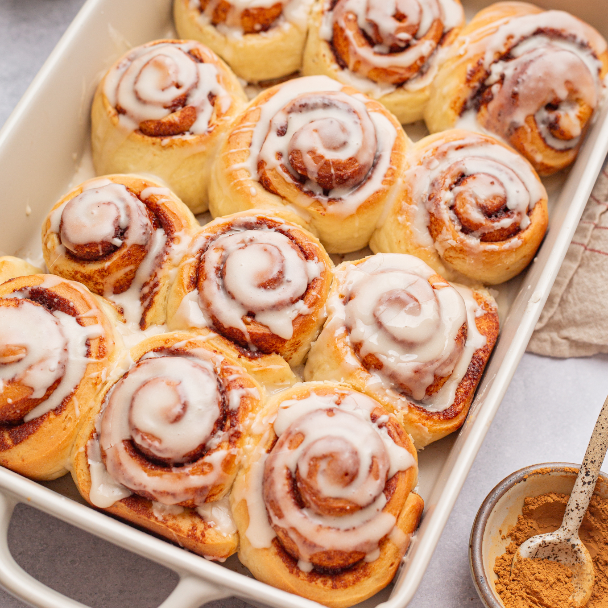
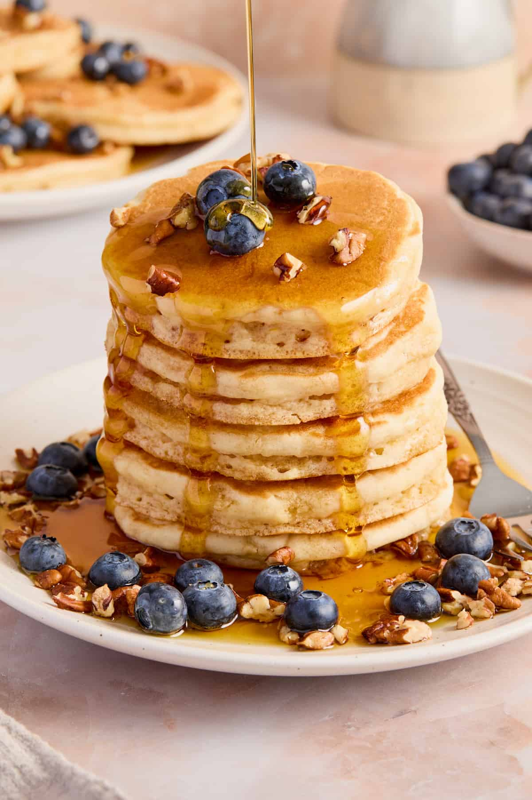
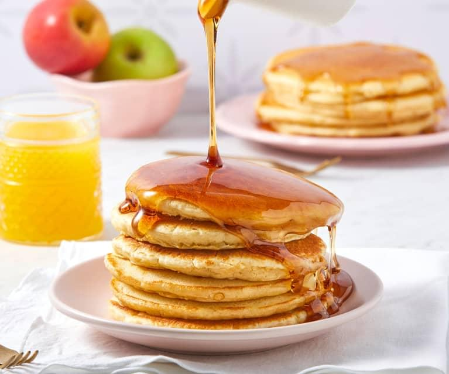
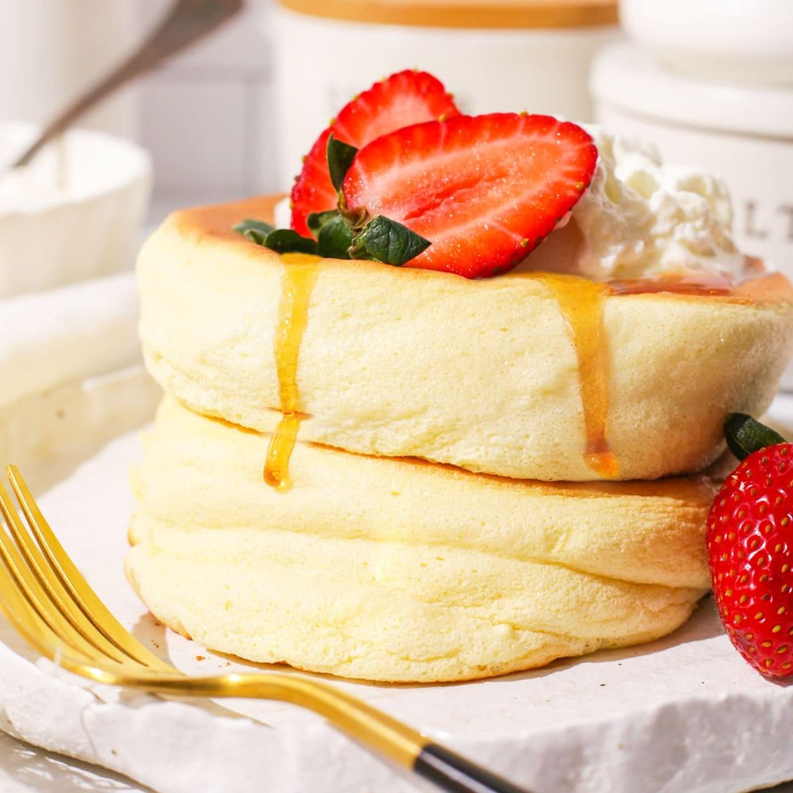
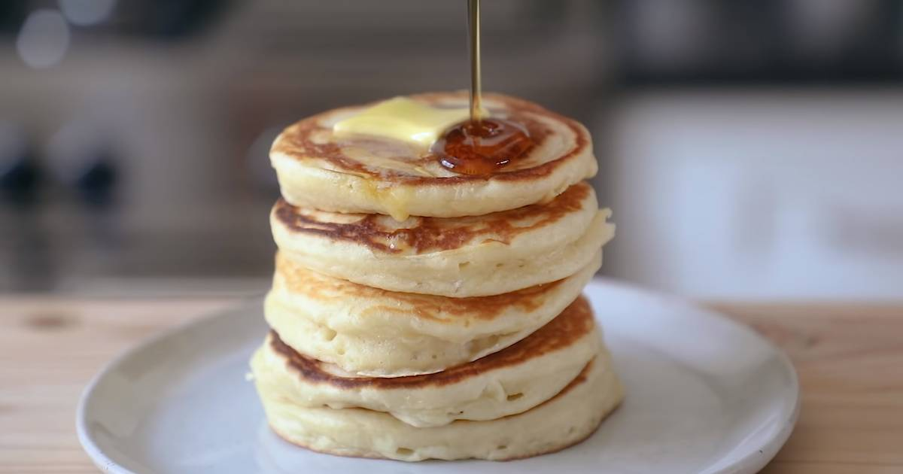
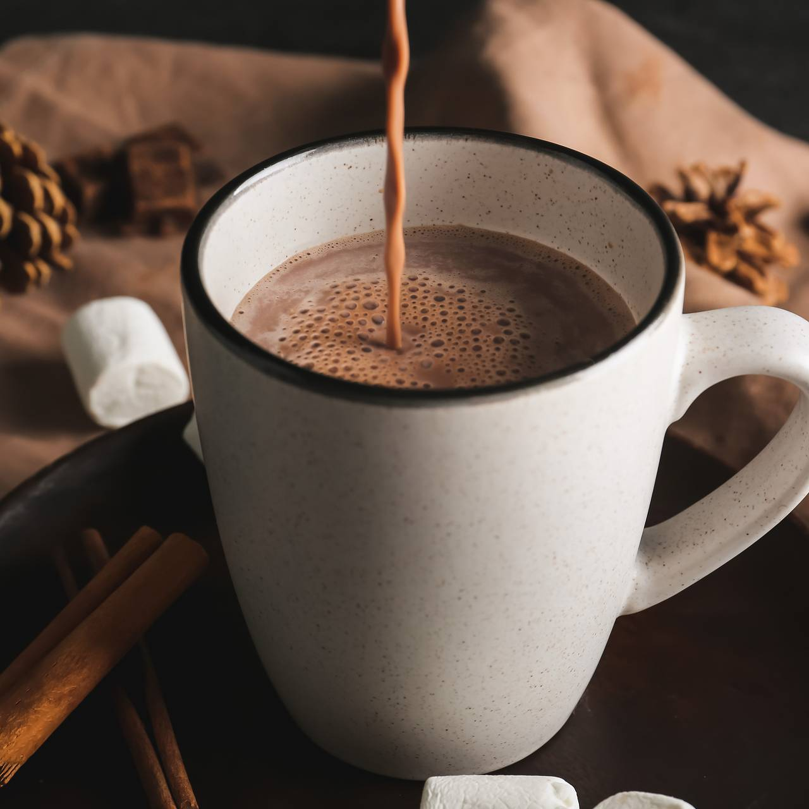

-

Синнабоны бриоассан
Классические синнабоны, но снаружи текстура круассана, а внутри нежнейший впитывающий сочный бриошь.
-

Синнабоны
Синнабоны - булочки с корицей политые сливочной глазурью. Потрясающий десерт, который порадует в любое время года, особенно - в холодную зимнюю пору с кружкой какао.
-

Ультимативные панкейки
Почти все техники, которые я знаю, применены в этом рецепте.
-

Панкейки (ленивые)
Панкейки - легкое в приготовлении блюда, но в котором есть много нюансов, которые нужно соблюдать. Спустя много экспериментов я нашел многие из них и хочу ими с вами поделиться.
-

Японские панкейки
Воздушные суфлейные панкейки, будто ешь облачко.
-

Сытные панкейки
Эти панкейки хороши сами по себе. Как булочка. Сытная вкусная булочка.
-

Какао
Мой любимый рецепт какао, над которым я долго экспериментировал и выработал для себя идеальное соотношение ингредиентов. Рецепт на любителя, но мне нравится.